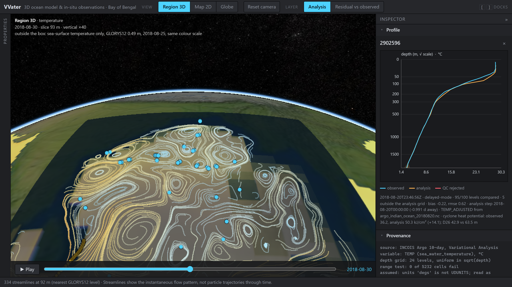
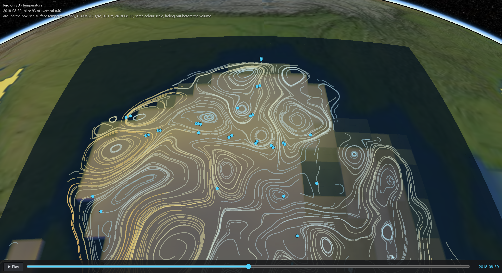
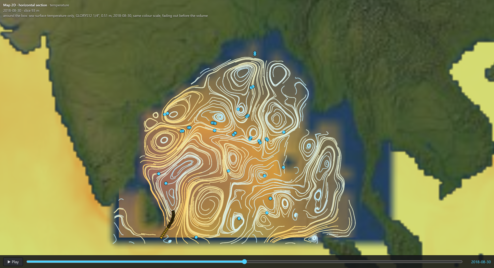
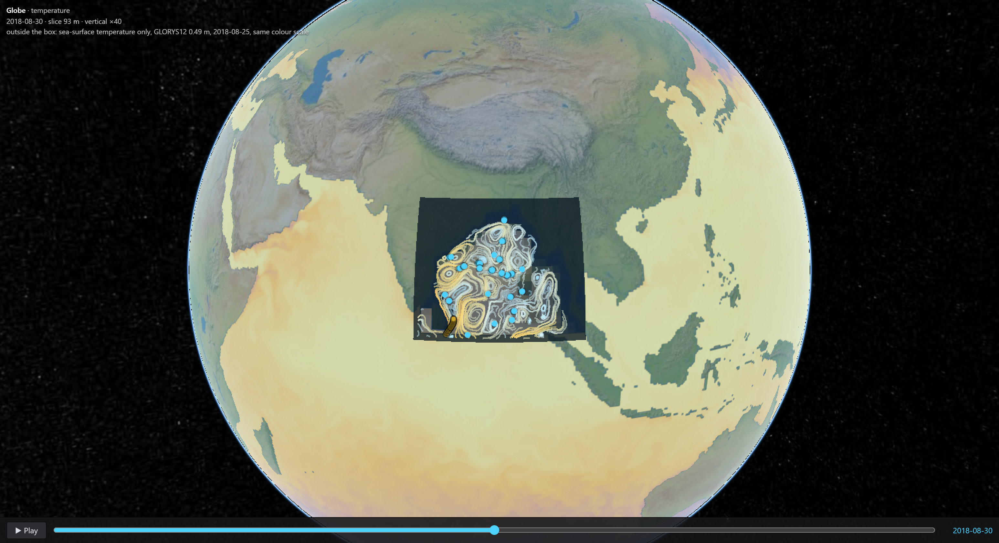

INCOIS knows the ocean in 3D; its forecasters still read it in 2D. VVater puts the model and every instrument in one 3D scene, in a browser, and shows where they disagree.
A cyclone feeds on a warm layer tens of metres thick. A surface map cannot show how thick, and thickness is the fuel.
The model estimates the whole ocean on a grid; floats and gliders actually measure, at a few points. Where they disagree matters most.
Each is opened in its own desktop program, mostly as flat maps, so comparing them is manual — the gap the brief names.
Measured minus model as its own 3D layer. Only 4.86% was ever measured; the rest stays visibly empty.
The analysis ships an error field; water the model is guessing about is drawn faint, not solid.
Every comparison also in cyclone heat potential (kJ/cm²); the 20 °C isotherm is one click.
Each point carries its QC flag, data mode and source file; rejected levels are drawn red, not deleted.



